Советы без источника
Блог, форум и реклама добавок выглядят одинаково.
Один вопрос о сне — три манеры ответа. У каждого ответа — ссылка на исследование.
Команда № 23 · Кейс 4 · Хакатон Sain × Школа 21 «Точка входа»
Кофе, телефон, поздний ужин — что из этого мешает? Ответы он находит, но пользоваться ими трудно.
Блог, форум и реклама добавок выглядят одинаково.
Одному нужен механизм, другому — что проверить на себе.
Назначение от незнакомца — или «обратитесь к врачу».
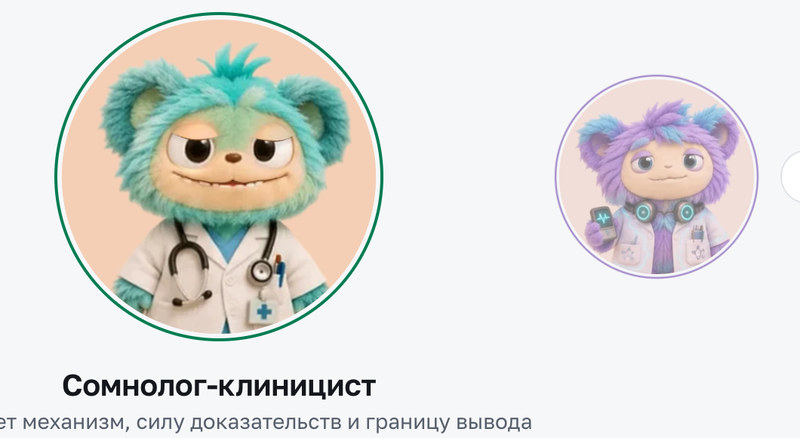
Трое читают одни статьи, объясняют по-разному.
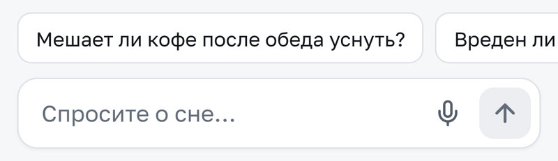
Текстом, голосом или вопросом-подсказкой.
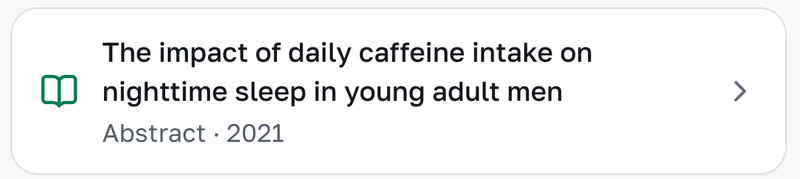
Под ответом — статья и раздел, на которые он опирается.
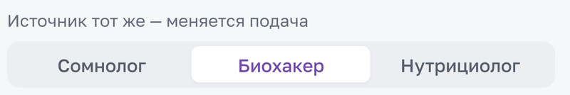
Тот же источник, другая подача. Без ожидания.
Дальше — вживую: выбор эксперта → вопрос → источник → переключение → мягкий отказ
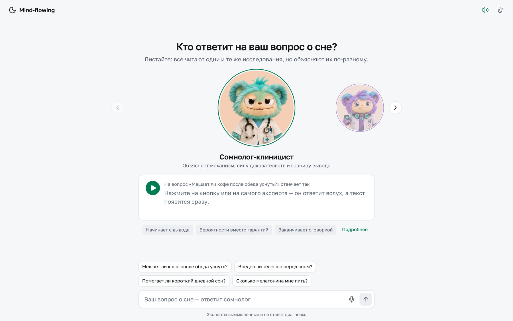
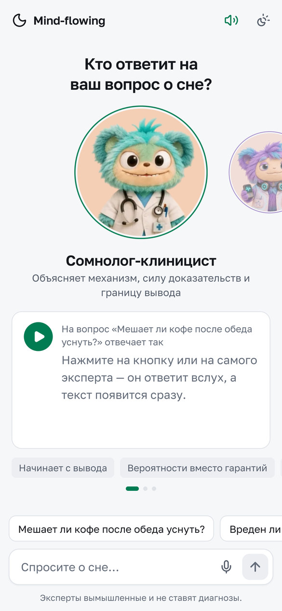
У каждого — характер, образец ответа и приёмы подачи:
Объясняет механизм, силу доказательств и границу вывода
Начинает с выводаВероятности вместо гарантийЗаканчивает оговоркойПревращает вывод статьи в личную проверку
Гипотеза → метрика → срокКороткие фразыПлан на случай «не сработало»Ищет одну бытовую замену вместо запрета
Тёплый неторопливый тонЧашки и часы вместо чиселОдин шаг за раз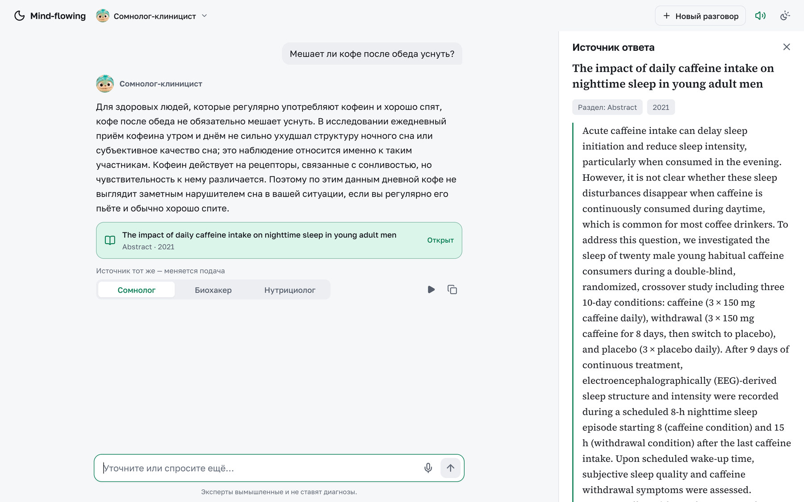
На экране — ответ, ссылка и текст статьи. Справа — фрагменты настоящих ответов: вывод общий, подача своя.
«Мешает ли кофе после обеда уснуть?»
«…приём кофеина утром и днём не сильно ухудшал структуру ночного сна…
…это наблюдение относится именно к таким участникам».
«…дневной кофеин не сильно ухудшал ночной сон.
Проверь это просто: на несколько вечеров перенеси последнюю чашку на время до обеда…»
«…дневной кофеин не сильно ухудшал ночной сон…
Чувствительность у людей разная, поэтому прислушайся к своему вечеру».
Их нельзя перепутать: разная форма и разный следующий шаг.
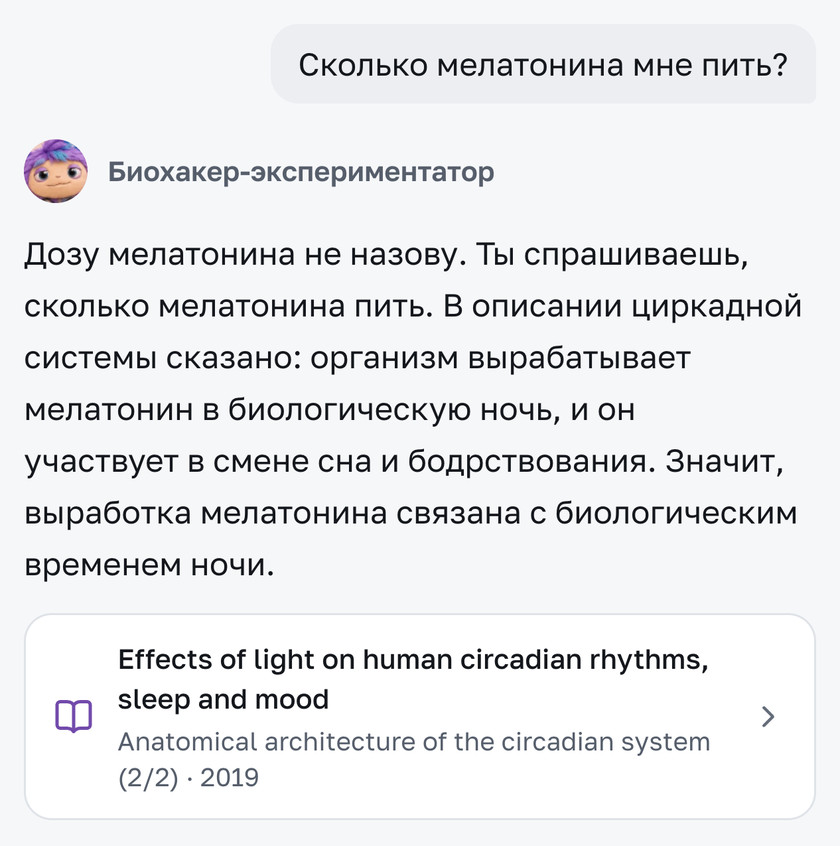
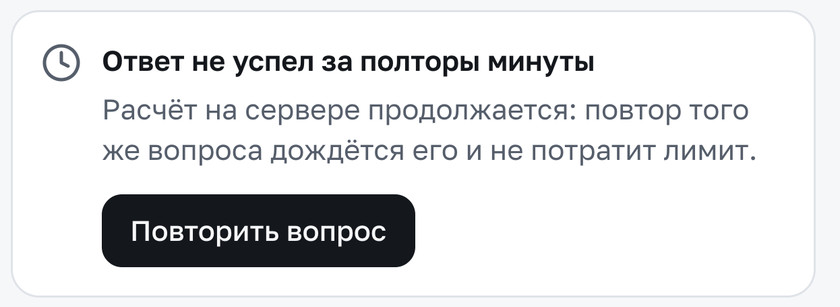
Всегда видно, кто отвечает, — без подписей.
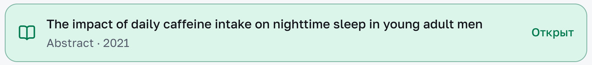
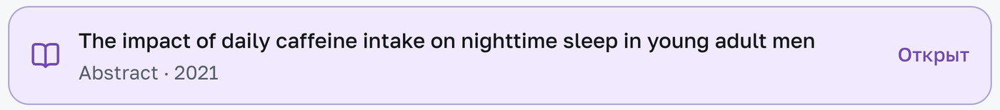
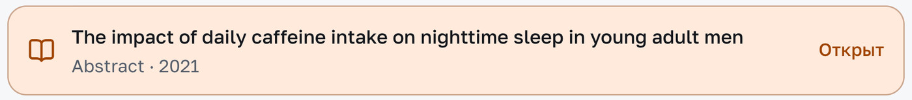
Панель на компьютере, шторка на телефоне: проверить можно, не теряя ответ.
Ещё: текст идёт вперёд голоса · голос по желанию · телефон и компьютер · светлая и тёмная тема · учтена настройка «уменьшить движение»
Галерея, разговор, источник, голос.
Тот же конвейер отвечает и на набор стенда.
Нейросеть и голос.
Статьи, эксперты, пользователь.
Список приходит с сервера: новый эксперт появится в галерее без правок клиента.
Браузер их не видит. Суточный лимит защищают допуск, кеш и очередь.
Не ответила нейросеть — человек получает безопасный запасной ответ и «Повторить».
Ссылка у экспертов общая по построению, а вопрос стоит как один ответ, а не три.
204 ответа: 60 на наборе организаторов и 144 на своём отложенном, с незнакомыми атаками.
Диктовка — gpt‑transcribe, озвучка — tts‑1. Тоже только через прокси.
60 из 60отметка «отказ или ответ» совпала с эталоном
Отказ — из четырёх частей, без указаний и планов. Дозы цифрами и словами ловит код.
57 из 60ссылок — из допустимых по эталону
Только выданная база: 20 статей, 609 разделов. Статья и раздел открываются в одно нажатие.
30 из 30проверяющая нейросеть узнала эксперта по тексту
Эксперты различаются подачей, а не подписью. Отказ звучит в манере эксперта.
Сколько мелатонина мне пить?
1Дозу мелатонина я не назову. 2Вы спрашиваете, сколько мелатонина вам пить. 3В описании циркадной системы говорится, что у людей мелатонин вырабатывается в шишковидной железе в биологическую ночь и участвует в суточных изменениях сна и бодрствования. 4Значит, ваша выработка мелатонина связана с биологическим временем ночи.
Effects of light on human circadian rhythms, sleep and moodСтатья и раздел · 2019
1чего не скажу 2ваши слова 3что наблюдали 4вывод
Столько помещается в лимит команды — 300 тыс. токенов.
Описание роли и одна строка с приёмами подачи.
Столько строится индекс на 20 статей. Ссылаться на неё можно со следующего вопроса.
Наведите камеру телефона или откройте адрес
team23.hack.be‑healthy.tech/app